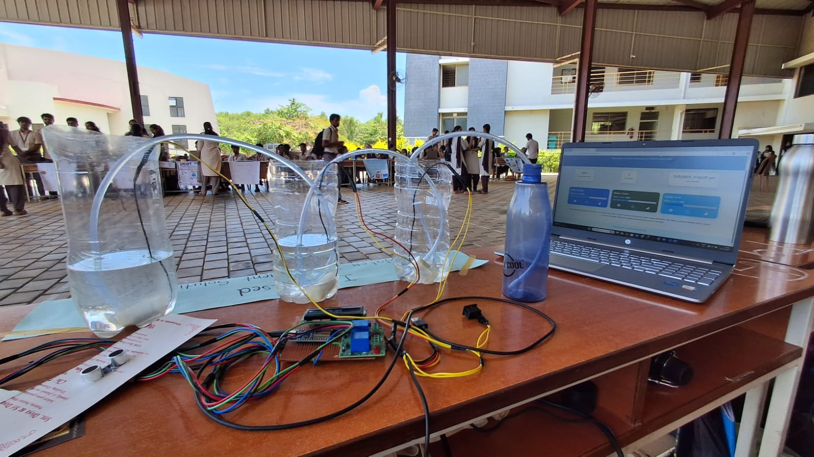

This project was developed to automate and manage water distribution between multiple tanks in an efficient way. It uses IoT technology to monitor water levels and control the flow of water between tanks without manual effort. The system continuously tracks the water level in different tanks such as the main tank, water tower, and home tank. Based on the water levels, it automatically manages the transfer of water, helping in better utilization and reducing wastage.
In this project, ultrasonic sensors are used to measure the water level in each tank. These sensors send distance values to the ESP32, which calculates the water level in percentage. Based on these readings, the system decides how water should be distributed between the tanks. When the water level in one tank is low and another tank has sufficient water, the system automatically turns on the motor to transfer water. This process happens without manual intervention, making the system efficient and easy to use. The ESP32 controls relay modules, which act as switches to turn the water pumps ON and OFF. These pumps are used to move water between tanks through pipes. The system also sends water level data and pump status to Google Sheets. This allows the data to be stored and viewed easily, making monitoring simple and accessible. An LCD display is used to show the current water levels and system status in real time, which helps in quick understanding of the system’s operation. This project shows how simple components can be combined to automate water management and improve efficiency in daily usage.
